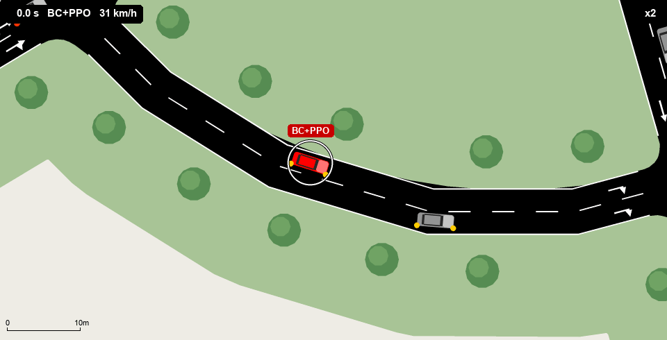
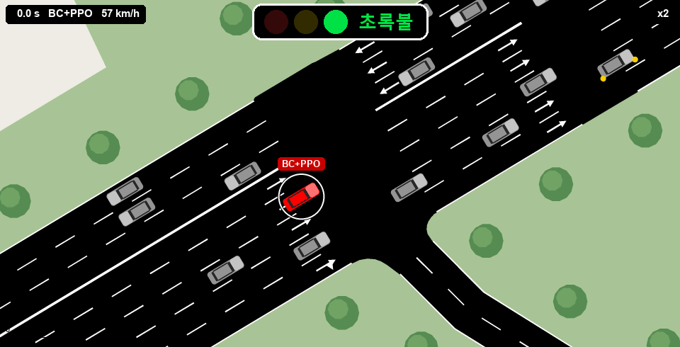
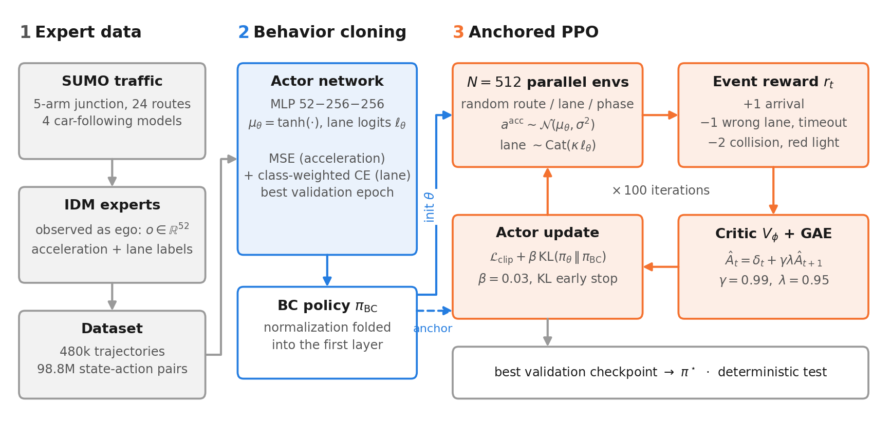
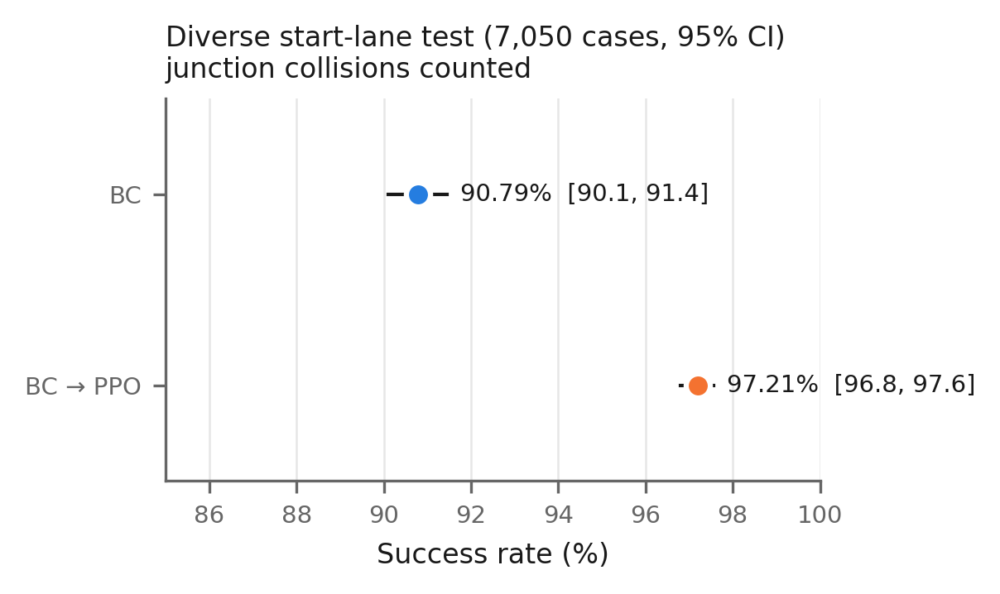
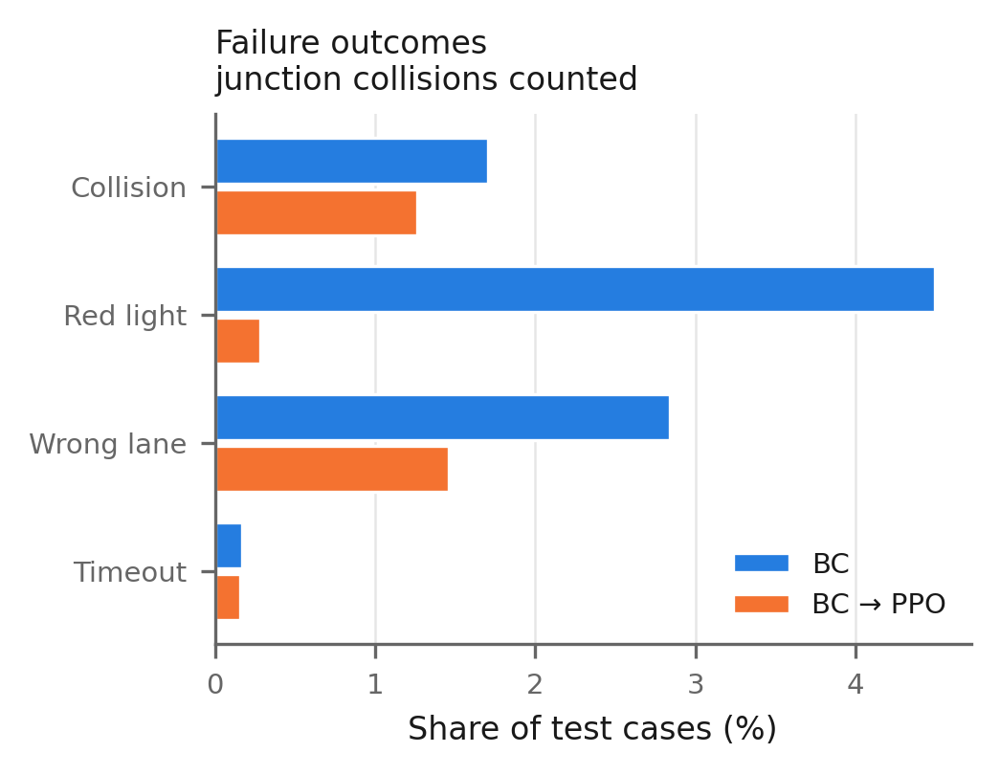

NORA: NOhyeong, Jeju — Reinforcement-learning Autonomous driving in SUMO
상호작용 장면
학습한 정책이 테스트 주행에서 주변 차량과 신호에 반응하는 장면입니다. 흰 원과 BC+PPO 표시가 붙은 빨간 차가 정책이 운전하는 차량, 초록 차가 상호작용 상대 차량이며, 모든 장면은 2배속입니다.

적색 신호에서 시속 58 km로 접근하다 최대 3.4 m/s²로 감속해, 정지선 8.2 m 앞 대기 줄 맨 뒤에 멈춥니다.

옆 차선의 차가 23 m 앞으로 끼어들자, 차선을 유지한 채 시속 46 km에서 38 km로 속도를 낮춥니다.

시속 20 km로 느려진 앞차를 옆 차선으로 앞지른 뒤, 5.5초 만에 그 차 4.3 m 앞의 원래 차선으로 돌아옵니다.

시속 36 km로 달리며 뒤차 2.7 m, 앞차 9.4 m 틈으로 들어가, 우회전 샛길로 이어지는 맨 오른쪽 차선까지 이동합니다.

우회전 샛길 끝에서 시속 31 km를 5 km까지 낮춰 본선 차 6대를 먼저 보낸 뒤 1100로에 합류합니다.

맨 왼쪽 차선에서 적색 신호를 기다렸다가, 녹색 신호에 앞차를 따라 돌아 반대 방향 도로로 들어갑니다.

정지선 35 m 앞, 시속 56 km에서 황색 신호를 만나 최대 4.0 m/s²로 감속해 정지선 1.2 m 앞에 멈춥니다.

정지선 23 m 앞, 시속 51 km에서 황색 신호를 만나 2.5초 뒤, 3초인 황색 신호 안에 정지선을 지납니다.
초록
NORA는 제주 노형오거리를 재현한 SUMO 환경에서 자율주행 차량이 주어진 경로를 완주하도록 학습하는 프로젝트입니다. 24개 경로와 다양한 출발 차선에서 신호 준수, 차선 선택, 주변 차량과의 상호작용을 함께 다룹니다. IDM 배경 차량에서 선별한 48만 개 궤적, 98,759,227개의 상태–행동 쌍으로 행동 복제(BC) 정책을 학습하고, BC 정책과의 KL anchor를 사용하는 PPO로 미세 조정합니다. 정책은 52차원 부분관측을 받아 가감속과 차선변경을 결정하며, 신호 준수와 안전한 차선변경은 학습된 정책이 직접 판단합니다. 검증 세트로 선택한 PPO 체크포인트는 교차로 내부 충돌을 포함한 7,050건 테스트에서 97.21%의 성공률을 기록했습니다. BC 단독의 90.79%보다 6.41%p 높으며, 적색 신호 위반은 317건에서 30건으로 감소했습니다.
프로젝트 개요
목표는 주변 교통을 관측하면서 지정된 경로의 마지막 도로 끝까지 도착하는 것입니다. 중앙 교차로를 지나는 19개 경로와 순환도로 5개 경로를 사용하며, 같은 경로도 출발 차선과 교통 상태에 따라 다른 판단이 필요합니다.
- 전문가에서 출발: 혼합 교통 속 IDM 차량의 주행을 모방학습으로 익힙니다.
- 실패를 줄이는 미세 조정: BC 정책을 기준으로 학습 방향을 유지하는 anchor를 두고, 도착·충돌·신호 위반 등 사건 보상으로 PPO를 학습합니다.
- 분리된 평가: 학습과 다른 교통 seed로 검증·테스트 세트를 만들고, 검증 결과로 최종 모델을 선택합니다.
도로 환경


노형오거리는 다섯 도로가 만나는 신호 교차로로, 녹지를 둘러싸는 원형도로와 우회전 샛길이 함께 연결되어 있습니다. 실제 주차장으로 사용되는 원형도로 위쪽 구간은 통행을 막고 주황색으로 표시했습니다. 월랑로를 제외한 네 도로에는 맨 왼쪽 차선에서 유턴하는 경로를 구성했습니다.
| 구간 | 도로 | 중심까지 거리 |
|---|---|---|
| A1 | 노형로 남서 | 320 m |
| A2 | 노형로 북동 | 320 m |
| A3 | 1100로 남 | 320 m |
| A4 | 월랑로 북서 | 260 m |
| A5 | 노연로 동 | 320 m |
접근 도로의 제한속도는 13.89 m/s, 순환도로는 8.33 m/s입니다. 120초 주기의 5단계 묶음 신호를 사용하며, 전체 배경 교통은 시간당 4,700대입니다. 차량추종모델은 Krauss 35%, IDM 30%, EIDM 20%, ACC 15%로 구성됩니다. 시뮬레이션 간격은 0.5초, 에피소드 제한은 500초입니다.
학습 방법

52차원 부분관측
| 차원 | 정보 |
|---|---|
| 31 | 속도·주변 차량·차선 연결·밀도 |
| 4 | 신호 색과 정지선 거리 |
| 8 | 다음 두 갈림길의 거리와 회전 방향 |
| 6 | 순환도로 위치와 합류 차량 |
| 2 | 다음 도로 입구 중심까지 좌우 거리 |
| 1 | 출발 구간 진행 위치 |
주변 차량은 50 m, 신호는 100 m 범위에서 관측합니다. 길안내는 다음에 갈 도로의 방향과 거리를 제공하고, 경로에 맞는 차선은 정책이 선택합니다. 차선 연결 관측은 물리적 연결을 나타내며, 경로 안내와 함께 주행 판단에 활용됩니다.
하이브리드 행동
공유 MLP(52 → 256 → 256, ReLU)가 연속 가감속과 왼쪽·유지·오른쪽의 세 가지 차선 행동을 출력합니다. 가감속 범위는 ±5.4 m/s²입니다. 평가에서는 가감속 평균과 차선 argmax를 사용합니다. Ego의 자동 감속·신호 준수·차선변경 안전 게이트를 끈 상태에서 정책 명령으로 주행합니다. 명령은 실제 존재하는 차선과 차량의 물리적 행동 범위 안에서 적용됩니다.
BC에서 Anchored PPO로
BC는 가감속 MSE와 클래스 가중 차선 교차 엔트로피로 학습합니다. PPO actor는 BC 가중치로 초기화하고, 고정된 BC 정책과의 KL anchor(계수 0.03)를 추가합니다. 별도 critic은 첫 5회 반복 동안 먼저 학습합니다. 이후 512개 환경을 16개 SUMO 프로세스로 실행하여 100회 반복, 총 3,276,800개 전이를 수집합니다.
사건 기반 보상
| 사건 | 보상 |
|---|---|
| 도착 | +1 |
| 충돌 / 적색 신호 위반 | −2 |
| 잘못된 차선 / 시간 초과 | −1 |
| 실행된 차선변경 | −0.01 |
| 매 스텝 | −0.0001 |
| 적색 신호 앞 정확한 정지 | 최대 +0.01, 신호당 한 번 |
보상은 도착과 안전 관련 사건, 정확한 정지, 차선변경 횟수에 초점을 맞춥니다. 정지 보너스는 목표 정지 위치에서 멀어질수록 절댓값 지수 형태로 감소합니다. 자세한 관측 정의와 학습 설정은 프로젝트 보고서(PDF)에서 확인할 수 있습니다.
실험 및 결과
테스트 7,050건 = 94개 경로·출발 차선 조합 × 75개 교통 상태. 검증 세트 2,820건과 테스트 세트는 학습과 서로 다른 교통 seed를 사용합니다. 사례마다 SUMO를 새로 시작하고 결정적 정책으로 평가하며, 교차로 내부 충돌도 검사합니다. 성공은 실패 조건 없이 경로 끝에 도착한 경우입니다.
| 정책 | 성공률 | 도착 | 충돌 | 적색 신호 | 잘못된 차선 | 시간 초과 |
|---|---|---|---|---|---|---|
| BC | 90.79% | 6401 | 120 | 317 | 200 | 12 |
| BC → Anchored PPO (iter 60) | 97.21% | 6853 | 73 | 30 | 83 | 11 |
성공률은 반올림 전 수치 기준 6.41%p 개선됐고, 적색 신호 위반은 317 → 30건으로 줄었습니다. 충돌률은 1.70%에서 1.04%로 감소했습니다. 평균 속도는 BC 7.75 m/s, PPO 7.21 m/s로, PPO는 이 조건에서 더 낮은 평균 속도와 더 높은 완주 성공률을 보였습니다.


검증으로 선택한 체크포인트
반복 50–100의 체크포인트를 검증한 뒤, 검증 성공률 96.81%의 반복 60 모델을 선택했습니다. 이 모델의 테스트 성공률은 97.21%로, 마지막 반복 100의 95.83%보다 높았습니다. 최종 비교는 학습 교통과 분리된 검증·테스트 세트를 사용합니다. 고정 경로 1,800건은 학습 교통 상태와 겹치는 초기 BC 점검용 세트입니다.

학습 곡선 보기

평가 원본: BC JSON · PPO JSON · Checkpoint selection
Nohyeong-AV 공개 주행 데이터셋
학습한 PPO 정책(iter060)이 노형오거리를 주행하며 기록한 10,000,262개 POMDP 전이, 62,457개 에피소드를 Hugging Face에 공개했습니다. 정책이 관측한 정보와 행동·보상, 시뮬레이터의 전체 차량 상태·신호·사건을 함께 제공합니다.
32개 배치로 구성되며, 각 배치에는 학습용 NPZ, 전체 기록 JSONL.GZ, 수집 설정 metadata.json, SUMO 도로·경로 파일이 들어 있습니다. 수집 조건은 SUMO 1.27.1, 0.5초 간격, 시간당 4,700대, 250초 예열이며, 출발 차선과 신호 시작 시점을 무작위화하고 교차로 내부 충돌을 검사했습니다. 데이터셋 라이선스는 CC BY 4.0입니다.
- NPZ: 52차원 observation·next_observation, 2차원 action_raw, reward, terminated·truncated, episode·t, 주변 차량 좌표를 제공합니다.
- JSONL.GZ: 차량 전체 상태, 관측 신호와 진입로별 신호, 충돌 상대, 차선변경, 경로 정보를 포함합니다.
-
에피소드 식별: 배치마다 episode 번호가 0부터 시작하므로
(batch, episode)조합으로 구분합니다.
수집 에피소드 중 61,304건(98.15%)이 목적지에 도착했고, 충돌 819건, 적색 신호 위반 171건, 경로 밖 차선·자차 소실 163건을 포함합니다. 이 비율은 공개 데이터의 수집 분포이며, 앞서 제시한 고정 테스트 7,050건의 성능과는 평가 조건과 목적이 다릅니다.
다운로드 및 사용
Hugging Face CLI로 첫 배치를 내려받은 뒤 다음 예시로 읽을 수 있습니다.
hf download skku-av-team7/Nohyeong-AV --repo-type dataset \
--local-dir nohyeong-av --include "data/batch_0000/*"import numpy as np
with np.load("nohyeong-av/data/batch_0000/ppo_0000.npz") as data:
observations = data["observation"]
actions = data["action_raw"]
rewards = data["reward"]정책 학습에 사용한 IDM 전문가 데이터
BC 사전학습에는 별도로 선별한 IDM 궤적 48만 개, 상태–행동 쌍 98,759,227개를 사용했습니다. 학습은 456,000개 궤적·93,805,940개 표본, 검증은 24,000개 궤적·4,953,287개 표본으로 나눴습니다. 시뮬레이션 실행 단위로 분할하고, 드문 차선변경(약 0.73%)은 클래스 가중 손실로 보정했습니다. 이 전문가 데이터는 위 공개 PPO 주행 기록과 수집 주체·용도가 다릅니다.
한계 및 향후 계획
- 학습과 평가의 차이: 전문가 수집·PPO 학습은 교차로 내부 충돌 검사를 끈 상태이며, 본문에 보고한 평가는 이를 켠 결과입니다. 현재 관측은 차선 주변 차량과 합류 차량 중심이므로, 교차로 내부 상충 차량을 더 풍부하게 표현하는 방향으로 확장할 수 있습니다.
- 단일 지역·설정: 결과는 노형 도로망, 설정된 교통량·신호, 최종 seed 0 학습 실행에 해당합니다. 다른 지역과 실제 도로로 적용 범위를 넓히려면 추가 검증이 필요합니다.
- 남아 있는 실패: 최종 테스트에서는 충돌 73건, 적색 신호 위반 30건이 발생했습니다. 다음 단계는 상충 차량 관측과 미검증 교통 조건에 대한 평가를 확장하는 것입니다.
- 재현 환경: PyTorch·CUDA 빌드 차이의 작은 수치 오차가 장기 주행과 학습 결과를 바꿀 수 있습니다. 재현할 때는 소프트웨어 버전과 작업자 수를 함께 기록하고, 실행 환경을 동일하게 맞춥니다.
재현 및 자료
평가 세트 생성 → 전문가 수집 → BC 학습 → PPO 미세 조정 → 검증·테스트를 하나의 스크립트로
실행할 수 있습니다. 저장된 모델·설정·평가 결과는 main 브랜치의
results/final/에 포함되어 있습니다.
프로젝트 보고서는 모델 구조·52차원 관측·보상·평가 결과를 정리한 문서입니다. 실행 안내는 학습·평가·주행 데이터 수집 명령을, 데이터 컬럼 문서는 제출용 transition의 저장 형식과 필드를 다룹니다.
전체 파이프라인은 Bash와 seq를 사용합니다. requirements.txt의
Python 의존성과 libsumo를 설치하고, SUMO 실행 파일을 PATH에 등록한 뒤
저장소 루트에서 실행합니다. SMOKE=1은 작은 규모로 전체 실행 경로를
점검합니다.
SMOKE=1 bash scripts/reproduce_pipeline.sh
bash scripts/reproduce_pipeline.sh
기여 및 감사의 글
상호작용 장면 자료(GIF·설명·섹션 원본)는 YJK (@kimyoonjai000-bit)가 제작했습니다.
성균관대학교 자율주행인공지능및제어(ICE3052_41) 수업 프로젝트입니다. 수업의 SUMO·PPO 기반 코드에서 출발하여 노형 도로 환경, IDM 전문가 수집, 행동 복제, Anchored PPO, 분리된 평가 세트를 구성했습니다.
수업 원본: bmil-ssu.